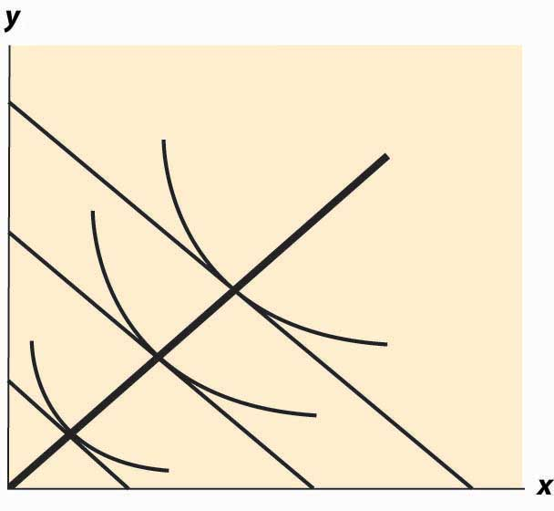
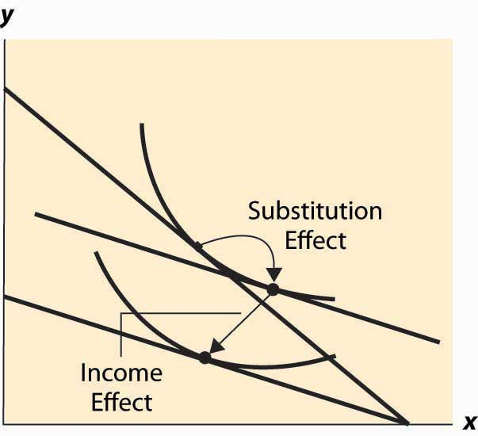

Wealthy people buy more caviar than poor people. Wealthier people buy more land, medical services, cars, telephones, and computers than poorer people because they have more money to spend on goods and services and, overall, buy more of them. But wealthier people also buy fewer of some goods, too. Rich people buy fewer cigarettes and processed cheese foods. You don’t see billionaires waiting in line at McDonald’s, and that probably isn’t because they have an assistant to wait in line for them. For most goods, at a sufficiently high income, the purchase tends to trail off as income rises.
When an increase in income causes a consumer to buy more of a good, that good is called a normal good for that consumer. When the consumer buys less, the good is called an inferior good, which is an example of sensible jargon that is rare in any discipline. That is, an inferior good is any good whose quantity demanded falls as income rises. At a sufficiently low income, almost all goods are normal goods, while at a sufficiently high income, most goods become inferior. Even a Ferrari is an inferior good against some alternatives, such as Lear jets.
The curve that shows the path of consumption as income changes, holding prices constant, is known as an Engel curveGraph that shows the path of consumption as income changes, holding prices constant..The Engel curve is named for Ernst Engel (1821–1896), a statistician—not for Friedrich Engels, who wrote with Karl Marx. An Engel curve graphs (x(M), y(M)) as M varies, where x(M) is the amount of X chosen with income M, and similarly y(M) is the amount of Y. An example of an Engel curve is illustrated in Figure 12.11 "Engel curve".
Figure 12.11 Engel curve
Example (Cobb-Douglas): Since the equations define the optimal consumption, the Engel curve is a straight line through the origin with slope
An inferior good will see the quantity fall as income rises. Note that, with two goods, at least one is a normal good—they can’t both be inferior goods because otherwise, when income rises, less of both would be purchased. An example of an inferior good is illustrated in Figure 12.12 "Backward bending—inferior good". Here, as income rises, the consumption of x rises, reaches a maximum, and then begins to decline. In the declining portion, X is an inferior good.
The definition of the substitution effect now permits us to decompose the effect of a price change into a substitution effect and an income effect. This is illustrated in Figure 12.13 "Income and substitution effects".
What is the mathematical form of the income effect? This is actually more straightforward to compute than the substitution effect computed above. As with the substitution effect, we differentiate the conditions and holding pX and pY constant, to obtain and
Figure 12.12 Backward bending—inferior good
Figure 12.13 Income and substitution effects
The second condition can also be written as
This equation alone defines the slope of the Engel curve without determining how large a change arises from a given change in M. The two conditions together can be solved for the effects of M on X and Y. The Engel curve is given by
and
Note (from the second-order condition) that good Y is inferior if or if or is increasing in x. Since is locally constant when M increases, equaling the price ratio, and an increase in y increases (thanks to the second-order condition), the only way to keep equal to the price ratio is for x to fall. This property characterizes an inferior good—an increase in the quantity of the good increases the marginal rate of substitution of that good for another good.